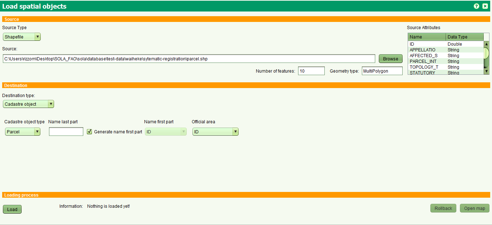

تحميل حزمة الكائنات المكانية
تم تقسيم الوجهة الى ثلاثة اقسام
- المصدر
- الوجهة
- اجراء التحميل
المصدر
في هذا الجزء من الشاشة ., مصدر البيانات المكانية يتم تحديده. حتى الان, امصدر يدعم فقط الملفات من نوع Shapefile
يمكن اختيار الملفات بالضغط على زر "استعراض" . سوف يتم قراءة الملف بعد اختياره وسوف يتم تحميل الحقول التالية :
نوع الجيومتري, عدد الخصائص التي تم العثور عليها بالصافة الى جميع حقول الملف
الوجهة
في هذا القسم من الشاشة يتم تعريف الوجهة. حتى الان هناك :
- كائن مكاني
ستم اختياره اذا اراد المستخدم تحميل كائنات مكانية مثل القطع, البنايات ,الخ. يتم قراءة انواع الكائنات المكانية من جدول cadastre.cadastre_object_type.
هذا النوع يتطلب :
- طباعة الجزء الاخير ,
- او تعيين الحقل الذي سيتم منه قراءة الجزء الاول او اذا كان الجزء الاول سيتم انشاؤه اوتوماتيكيا
- للمساحة الرسمية يجب تحديد الحقل في المصدر .
- كائن اخر يتم اختياره اذا اردت تحميل كائنات اخري مثل الطرق, نقاط تحكم , قري ,الخ. اختر نوع الكائن واختر الحقل من المصدر لاستخدامه لتسمية الكائن
اجراء التحميل
عند الضغط على زر "تحميل" يتم اولا التحقق من صحة بيانات المصدر ووالوجهة وهل تم تحويل المعالم من المصدر الى الكائنات المطلوبة ومن ثم يتم ارسال البيانات الى الخادم لتخزينها
خلال هذا الوقت سوف يظهر بار للدلالة علة التقدم في عملية المعالجة
في النهاية سوف تظهر رسالة للدلالة علة انتهاء العملية
خدمة تغيير المساحة يمكن استخدامها فقط للكائنات التي فشلت عملية تحميلها
بالضغط على زر "تراجع" بالامكان التراجع عن عملية التحميل
بالضغط على زر "فتح الخارطة" لجميع انواع الكائنات يمكن استخدام الخارطة لمشهدة جميع المعالم التي تمت اضافتها

انظر ايضا